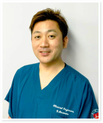

NEWS
新着情報
SEMINARS
セミナーのお知らせ
研究会・セミナーの開催情報
ARCHIVE
過去の勉強会
開催報告・講演記録・活動写真
ARCHIVE
過去の勉強会
これまでの研究会・勉強会の開催記録、講演内容、写真をご覧いただけます。
過去の勉強会を見る →ABOUT KaMPUS
当研究会について

MESSAGE
会長挨拶
会長 峰松 佑輔
我々は2012年より、関西圏における急性血液浄化領域で業務を行う臨床工学技士を中心に「関西血液浄化技術ミーティング」として会を発足し、毎年2回の特別講演やグループディスカッションなどを企画しながら活動を行って参りました。
そして2015年より、血液浄化へ関わるより多くの職種の知識と技術の発展のため「関西血液浄化研究会（Kansai-Meeting of Purification Study、略称：KaMPUS≒CAMPUS）」として名称変更し本格的な研究会として活動を開始いたしました。
本会は、血液浄化を中心に急性期～慢性期にかけて複雑に絡み合う病態に対して、様々な視点から必要な話題を取上げ、個々の病態や治療法、さらには全身管理など集学的管理の知識向上を図ることを目的としております。
本会設立当初から心がけていることとして、施設間の垣根を超え臨床現場で直面する問題に対して、互いに意見し合える環境づくりを行えるように心がけて参りました。KaMPUSでの学びが参加された個々のベースアップに繋がり、さらには関西から新たな情報を発信に繋がることを期待して活動していきたいと考えております。
幹事・監事一覧
現行HPの掲載内容を暫定表示しています。今後はGoogleスプレッドシートで管理します。
| 役職 | 氏名 | 所属 |
|---|---|---|
| 名簿を読み込んでいます。 | ||
所属・役職は変更の可能性があるため、正式公開前に幹事会で確認します。
SPONSORS
協賛企業
協賛企業のバナーを掲載予定です。企業名・画像・リンク・表示順・公開設定はGoogleスプレッドシートで管理します。
協賛企業の登録準備中です。
CONTACT
お問い合わせ
お問い合わせ先は正式公開に向けて確認中です。
旧サイトは引き続き運用中です。新サイトの内容は制作途中のものです。